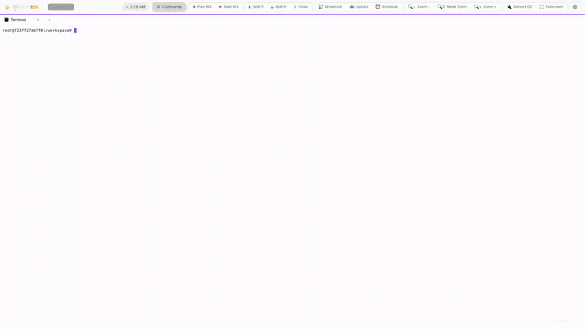
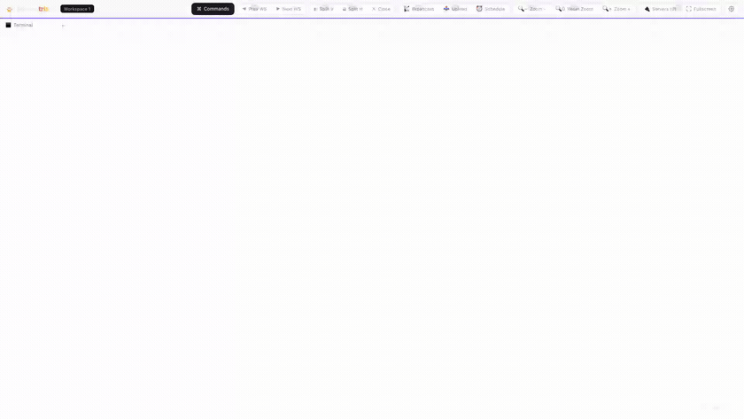
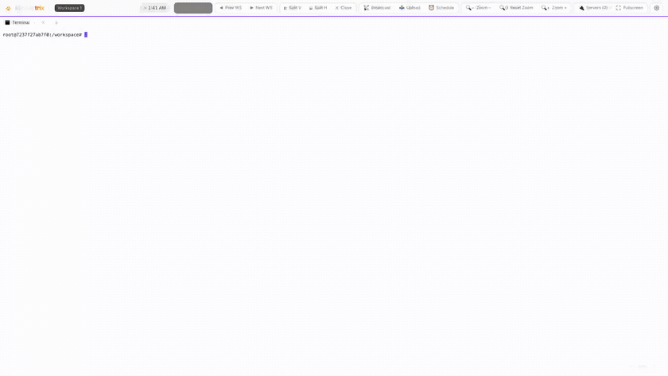
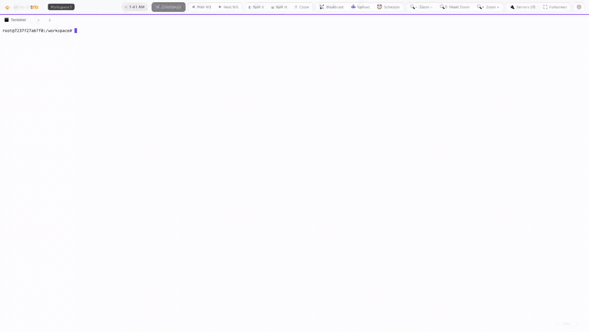
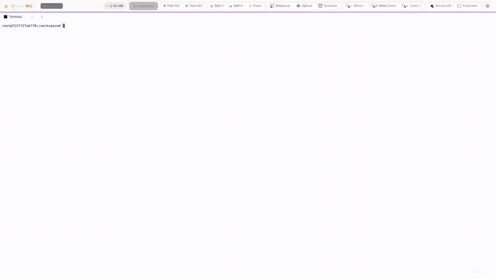
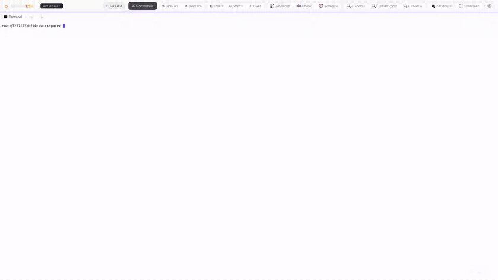
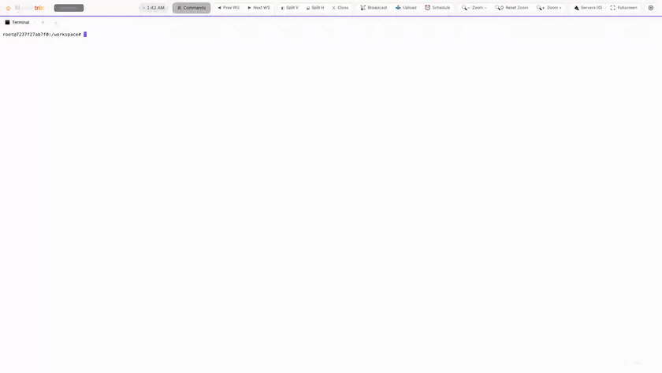

Split into as many panes as you need.
Split vertically or horizontally, then drag the dividers to resize. Splits are flat and proportional, so the layout survives window and screen-size changes.
- Side-by-side or stacked — split with
⌘\/⌘- - Drag dividers for live, resize-proof proportions
- Every pane holds tabs of any type

Real PTY-backed shells that outlive the tab.
Each terminal is a genuine PTY on the host. Shells keep running when you refresh, switch devices, or hit a network blip — the server replays the buffer and reattaches the live stream.
- xterm.js terminals with full color and TUI support
- Output buffer replays on reconnect — refreshes are non-destructive
- Broadcast input to every visible terminal at once

A real browser, right in a pane.
Open a browser tab next to your terminal. A server-side proxy strips frame-blocking headers and rewrites URLs, so pages that normally refuse to embed render anyway.
- Preview your dev server beside the shell building it
- Address bar, back/forward, reload, and open-in-window
- Proxy routes requests so otherwise un-embeddable sites load

Monaco, a file tree, and Source Control.
Open any folder on the host as a code-editor tab: the VS Code editor with a file-tree sidebar and per-file tabs. Git repos gain a Source Control view backed by real git commands.
- Lazy-loaded Monaco with syntax highlighting and IntelliSense
- Read/write files directly over a thin file API (
⌘Sto save) - Stage, diff, commit, push and pull from the sidebar

Everything, one fuzzy search away.
Press ⌘K (or Ctrl/⌘+Shift+P) for a fuzzy launcher. Split panes, open tabs, switch panes, toggle broadcast, change themes, open settings, schedule an Enter, or trigger an update — all without leaving the keyboard.
- Rebuilt on every open so commands reflect the current state
- Shares the exact actions the toolbar buttons call
- Shortcut avoids terminal readline bindings on purpose

Queue an Enter for later.
For agents gated behind a rolling usage quota: type the next command, then schedule an Enter to fire after a delay or at a clock time. The timer lives server-side, so it survives refreshes, reconnects, and device handoffs.
- Relative delay or absolute clock time
- The terminal locks behind a blurred overlay until it fires
- Server-side timer — close the tab and it still fires

Ten themes, terminals included.
Midnight, Daylight, Ocean, Matrix, Ember, Sakura, Synthwave and more. Everything — including the xterm.js terminals — is driven from the same CSS variables, so a theme switch recolors the entire workspace at once.
- Light, dark, and system-following modes
- Terminals re-theme from the shared palette for free
- Switch instantly from settings or the command palette

And a few more
The smaller touches that make it pleasant to live in.
Mobile-ready
An on-screen key bar with sticky Ctrl/Alt/Cmd modifiers, double-tap autocomplete, and a layout that reflows for touch.
Single active session
Server-coordinated handoff across devices: the newest client claims the workspace; others see a "move session here" overlay.
Self-updates
Get notified via an in-app banner, then trigger a git-based pull and server restart directly from the workspace.
Localhost by default
Binds to 127.0.0.1 so it's off the network until you opt in with --network. Tunnel in over SSH for safe remote access.
On-device Chat Pet
A customizable desktop pet companion (Mochi) powered locally by Chrome's built-in Gemini Nano model.
Keystroke Combo FX
Reward typing streaks with interactive visuals: particle bursts, screen shake, edge glow, and heat readouts.
Ready to try it?
Run the live demo in your browser, or install it on your own machine.